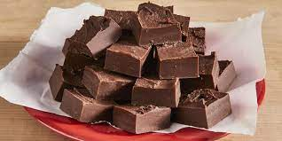

Creamy Chocolate Fudge

Description
This is a delicious and creamy chocolate fudge recipe that will satisfy your sweet tooth.
It's made with high-quality chocolate, condensed milk, and butter for a rich and smooth texture.
Ingredients
- 1 cup chocolate chips
- 1 can sweetened condensed milk
- 2 tablespoons butter
- 1 teaspoon vanilla extract
- 1/2 cup chopped nuts (optional)
Steps
- In a microwave-safe bowl, combine the chocolate chips, condensed milk, and butter.
- Microwave the mixture on high for 1 minute, then stir.
- Continue microwaving in 30-second intervals, stirring each time, until the chocolate is fully melted and the mixture is smooth.
- Stir in the vanilla extract and chopped nuts (if using).
- Pour the mixture into a greased baking dish and spread it evenly.
- Refrigerate for at least 2 hours, or until the fudge is set.
- Cut into squares and serve.